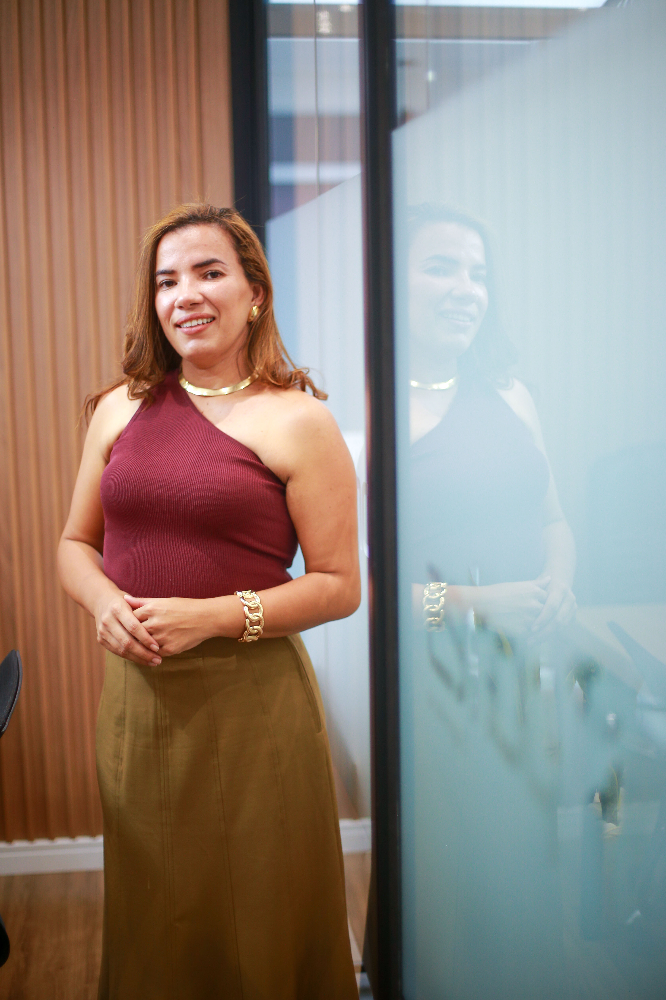
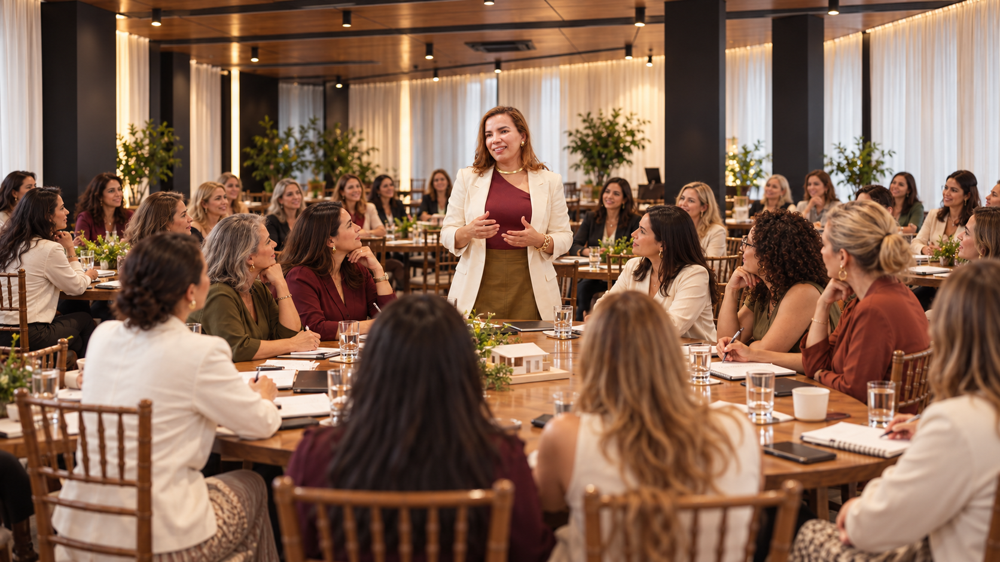

UM ENCONTRO. UM NOVO COMEÇO.
Construa a sua
independência financeira
com imóveis —
mesmo sem entender
de obra.
Um dia inteiro com a engenheira Joyce Portes para descobrir caminhos para construir patrimônio, conquistar autonomia e cuidar de você.
QUERO GARANTIR MINHA VAGAPresencial · Apenas 25 vagas

FUNDADORA DA PORTES ENGENHARIA
01 / UM NOVO OLHAR PARA VOCÊ
Você cuidou
de todo mundo.
E quem está cuidando
do seu futuro?
Você trabalhou, sustentou, apoiou, resolveu. Foi a força da casa, da família, do negócio. Mas, quando para e olha para a frente, sente um aperto que não conta para ninguém.
“Se eu parar de trabalhar amanhã,
do que eu vou viver?”
“Ainda dependo do salário, do marido ou dos filhos para ter segurança.”
“Meu dinheiro fica parado e eu sinto que ele só perde valor.”
“Eu deixo os meus cuidados sempre para depois, porque não sobra tempo nem dinheiro.”
“Eu queria investir, mas tenho medo de errar e perder o pouco que juntei.”
Você não está sozinha.
E você não está atrasada.
02 / O PRÓXIMO CAPÍTULO
Agora imagine
o contrário.
Um patrimônio no seu nome. Tranquilidade para escolher como viver. Tempo e recursos para cuidar de você.
Independência
não é sorte.
É construção.

03 / QUEM CONSTRÓI COM VOCÊ
Toda grande construção
começa por dentro.
Joyce conduz o encontro ao lado de cinco mulheres.
Cada uma, uma etapa da sua construção.
A OBRA PRONTA / JOYCE PORTES
Construir patrimônio.
Construir a si mesma.
Da sua história em Pocrane à fundação da Portes Engenharia, Joyce encontrou na construção um caminho para a própria independência. No encontro, ela conecta essas etapas às possibilidades de investir em imóveis.
O SEU PRÓXIMO PASSO
A independência
que você quer
também se constrói.
Um encontro presencial e intimista.
Uma oportunidade de olhar para o seu futuro.
11 de novembro 2026
- QUANDO
- Quarta-feira, das 9h às 18h
- ONDE
- Casa Aurora
Rua Vergueiro, 1855 · Vila Mariana, São Paulo - INVESTIMENTO
- R$ 97 por pessoa · 25 vagas no total
Prévia de layout · inscrições ainda não habilitadas